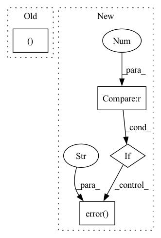

Pattern ID :17585
Before Change
else:
FIELD = field
train_sets, val_sets, vocab_sets = [], [], []
for task in args.train_tasks:
logger.info(f"Loading {task}")
kwargs = {"test": None}
kwargs["subsample"] = args.subsampleAfter Change
else:
FIELD = field
if len(args.train_tasks) > 1 and args.use_curriculum:
logger.error("Curriculum learning is supported for one task only." )
train_sets, val_sets, aux_sets, vocab_sets = [], [], [], []
for task in args.train_tasks:
logger.info(f"Loading {task}")
kwargs = {"test": None}In pattern: SUPERPATTERN
Frequency: 3
Non-data size: 4
Instances Fragment ID: 58039909
Project Name: stanford-oval/genienlp
Commit Name: 3cb97e63bfb518a57c045afac29ccd62fead7385
Time: 2019-03-12
Author: mehrad@stanford.edu
File Name: decanlp/train.py
M Class Name: AnonimousClass
N Class Name: AnonimousClass
M Method Name: prepare_data(3)
N Method Name: prepare_data(3)
M Parent Class:
N Parent Class:
M File Name: decanlp/train.py
N File Name: decanlp/train.py
M Start Line: 86
M End Line: 141
N Start Line: 89
N End Line: 159
Before Change
def auto_normalization_setting(series, setting, default_setting):
if setting == "auto":
if set(series.unique()) in ({True, False}, {1, 0}, {1.0, 0.0}, {-1, 1}, {-1.0, 1.0} ):
return "off" // Don"t standardize binary variables.
else:
return default_settingAfter Change
def auto_normalization_setting(array, setting, default_setting="soft"):
if setting == "auto":
if len(np.unique(array)) < 2 :
log.error("encountered variable with one unique value" )
raise ValueError
// elif set(series.unique()) in ({True, False}, {1, 0}, {1.0, 0.0}, {-1, 1}, {-1.0, 1.0}):
elif len(np.unique(array)) == 2:
return "minmax" // Don"t standardize binary variables. Fragment ID: 58039908
Project Name: ourownstory/neural_prophet
Commit Name: 5785baca61ebf4d0e625edaffe3fe8fb9a20686b
Time: 2020-11-27
Author: ourownstory@users.noreply.github.com
File Name: neuralprophet/df_utils.py
M Class Name: AnonimousClass
N Class Name: AnonimousClass
M Method Name: auto_normalization_setting(3)
N Method Name: auto_normalization_setting(3)
M Parent Class:
N Parent Class:
M File Name: neuralprophet/df_utils.py
N File Name: neuralprophet/df_utils.py
M Start Line: 77
M End Line: 82
N Start Line: 78
N End Line: 87
Before Change
m_hat = m // 2
shift = -np.log(-np.log(1 - p))
n = torch.randn([m, *w_shape]) * np.sqrt(np.square(torch.pi) / 6)
n[m_hat, ... ] += shift
return n
After Change
if m < 2:
Logger.error("m must be larger than two")
if m % 2 != 0 :
Logger.error("m must be module two" )
m_hat = m // 2 - 1
shift = -np.log(-np.log(1 - p))
n = np.random.randn(*[m, *w_shape]) * np.sqrt(np.power(np.pi, 2) / 6)
n = n.reshape([m, -1]).T Fragment ID: 58039905
Project Name: sony/model_optimization
Commit Name: cafaf22c27657fa41643c519a5b38eafba9871b3
Time: 2022-12-04
Author: elad.cohen2@altair-semi.com
File Name: model_compression_toolkit/gptq/pytorch/quantizer/gumbel_rounding/base_gumbel_weights_quantizer.py
M Class Name: AnonimousClass
N Class Name: AnonimousClass
M Method Name: init_aux_var(4)
N Method Name: init_aux_var(3)
M Parent Class:
N Parent Class:
M File Name: model_compression_toolkit/gptq/pytorch/quantizer/gumbel_rounding/base_gumbel_weights_quantizer.py
N File Name: model_compression_toolkit/gptq/pytorch/quantizer/gumbel_rounding/base_gumbel_weights_quantizer.py
M Start Line: 41
M End Line: 45
N Start Line: 31
N End Line: 55